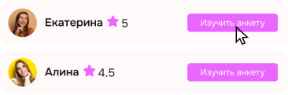

О сервисе
Сервис "Взрослый для взрослого" создан для того, чтобы опытные люди могли помочь менее опытным в решении бытовых и жизненных вопросов.
Это платформа, где знания и опыт передаются от одного взрослого к другому, как это обычно делают родители, помогая своим детям справляться с новыми задачами.
Как это работает?
-
1
Задача
Подробно опишите свою задачу, чтобы найти вашего взрослого
-
2
Поиск
Выберете исполнителя по опыту, рейтингу и отзывам других людей
 -
3
Цена
Договоритесь о цене самостоятельно
-
Ежедневно помогаем 40 людям